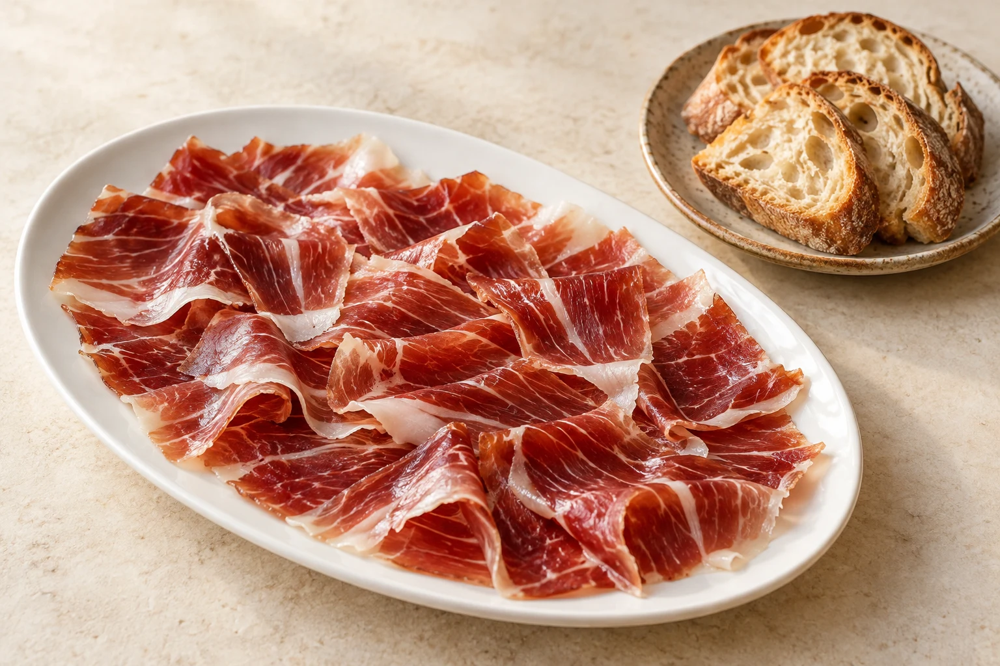
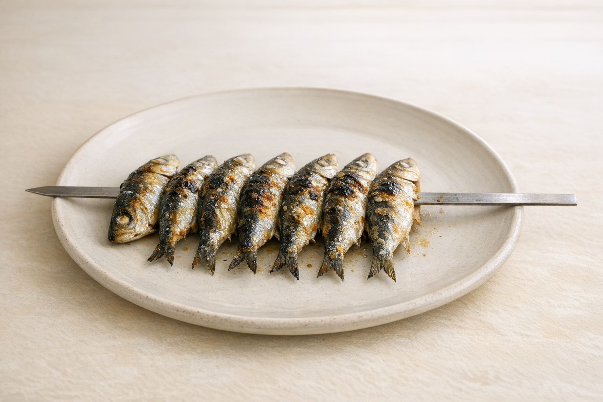

01
Entradas
SALMOREJO DE MANGO, AGUACATE Y GAMBAS
12.00 €TATAKI O TARTAR DE ATÙN ROJO DEL ESTRECHO
24.00 €TARTAR DE SALMÒN CON GUACAMOLE
16.90 €PIRULETAS CRUJIENTES DE GAMBÒN CON CHILE DULCE
13.90 €NUESTRA ENSALADILLA RUSA CON PULPO Y PIMENTON
12.90 €MATRIMONIO DE ANCHOAS Y BOQUERON
18.00 €VIEIRA GRATINADA CON MARISCO
9.50 €ENSLADA DEL CHEFF CON QUESO DE CABRA
13.90 €AGUACATE TROPICAL CON MANGO Y LANGOSTINOS
13.00 €
02
Picoteo
GAMBITAS DE HUELVA COCIDAS EN AGUA DE MAR
19.00 €EL ESPETO DE SARDINAS
7.50 €PATA DE PULPO BRASEADA CON PAPAS ALIÑAS
24.00 €GAMBAS AL PIL-PIL SIRENITA (a nuestra manera)
13.90 €COQUINAS DE MALAGA
Según mercadoALMEJAS DE CARRIL A LA MARINERA
18.00 €OSTRAS FRANCESAS
5.00 €CONCHAS FINAS Y BOLOS
4.00 €